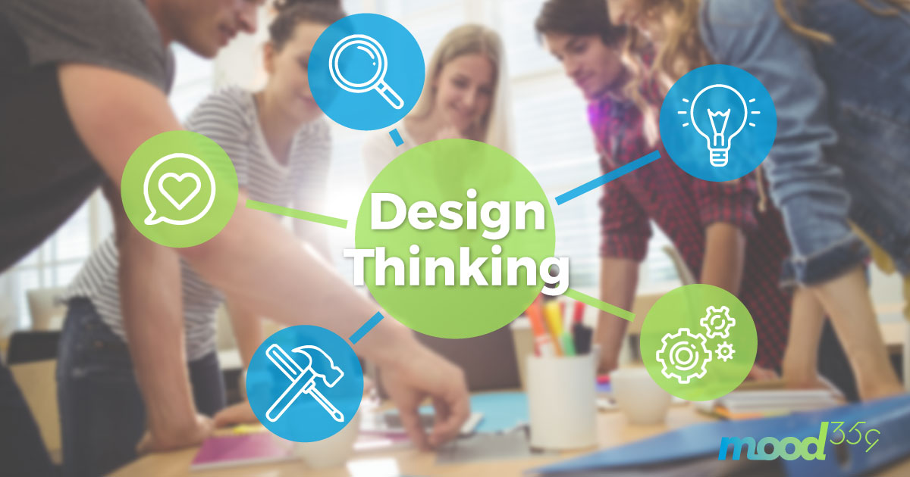

| Lo mas importante es el consumidor |
La metodología design thinking es un proceso de búsqueda de soluciones innovadoras para la resolución de problemas enfocado a cómo los consumidores piensan, sienten y se comportan. |
Proyectos de investigación y desarrollo
Design Thinking
쯘n qué consiste el design thinking?

쮺칩mo se organiza?
💙FASE DE EMPATÍA: El proceso de Design Thinking comienza con una profunda comprensión de las necesidades de los usuarios implicados en la solución que estemos desarrollando, y también de su entorno. Personas en general, clientes, empleados...Debemos ser capaces de ponernos en la piel de dichas personas para ser capaces de generar soluciones consecuentes con sus realidades.
🔍FASE DE DEFINICIÓN: Durante la fase de Definición, debemos cribar la información recopilada durante la fase de Empatía y quedarnos con lo que realmente aporta valor y nos lleva al alcance de nuevas perspectivas interesantes. Identificaremos problemas cuyas soluciones serán clave para la obtención de un resultado innovador.
💡FASE DE IDEACIÓN: La etapa o fase de Ideación tiene como objetivo la generación de un sinfín de opciones. No debemos quedarnos con la primera idea que se nos ocurra. En esta fase, las actividades favorecen el pensamiento expansivo y debemos eliminar los juicios de valor. A veces, las ideas más estrambóticas son las que generan soluciones visionarias.
🪚FASE DE PROTOTIPADO: En la etapa de Prototipado volvemos las ideas realidad. Construir prototipos hace las ideas palpables y nos ayuda a visualizar las posibles soluciones. Además, pone de manifiesto elementos que debemos mejorar, refinar o cambiar antes de llegar al resultado final.
⚙️FASE DE TESTEO: Durante la fase de Testeo, probaremos nuestros prototipos con los usuarios implicados en la solución que estemos desarrollando. Esta fase es crucial, y nos ayudará a identificar mejoras significativas, fallos a resolver, posibles carencias... Durante esta fase evolucionaremos nuestra idea hasta convertirla en la solución que estábamos buscando.
Obra publicada con Licencia Creative Commons Reconocimiento No comercial Compartir igual 4.0